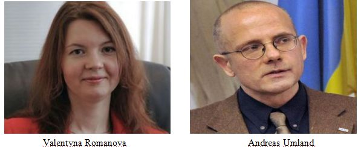

收录于合集

作品简介
**【作者】
**
****Valentyna Romanova是基辅国家战略研究所区域政策部的高级顾问，也是《区域和联邦研究区域选举年度审查》的共同编辑。 Andreas Umland是布拉格国际关系研究所非常驻高级研究员，基辅欧洲-大西洋合作研究所首席研究员。
【 编译】 冯毓婧（国政学人编译员，国际关系学院国际政治系）
【校对】 李桐
【审核 】 李博轩
【排版】 赵鑫娉婷
【 来源 **】
**
Valentyna,Romanova.&Andreas,Umland(2019).DecentralisingUkraine:Geopolitical Implications. Survival,61 ,99-112.
_ 期刊介绍 ****_

Survival: Global Politics and Strategy，由伦敦国际战略研究所（IISS）出版，双月刊，是对国际和战略事务进行分析和争辩的主导性论坛。 2018年影响因子为1.264。
乌克兰地方分权： 地缘政治影响
Decentralising Ukraine: Geopolitical Implications

内容提要
乌克兰正在进行的地方分权改革已经成为后欧洲亲欧盟示威运动时代的一个重要发展。由于“分权”的标签并无特别之处，改革的技术性和其对于地区的侧重，使乌克兰的地方分权改革没能引起西方媒体和分析人士的重视。实际上，这项改革可堪称为对乌克兰国家与社会关系的根本性重塑。作者认为，乌克兰地方分权改革可能超越国界，对东欧地缘政治产生相当大的影响。本文从介绍乌克兰地方分权改革实施情况入手，分析此项改革对乌克兰国内和地缘政治方面的影响，并推测俄罗斯借鉴乌克兰地方分权模式的可能性，从而提供了一个从乌克兰地方改革分析东欧地缘政治影响研究的全新视角。 文章导读
一、 乌克兰地方分权改革的实施
俄罗斯非法吞并克里米亚的几天后，克里姆林宫主导的顿巴斯武装起义开始几天前，乌克兰代理总统亚历山大·图尔奇诺夫考虑到国内形势以及历史上多次未竟的地方分权尝试，采纳并发布了《地方自治改革与地方分权的概念》文件。于是，乌克兰地方分权治理改革开始了，政府通过多项法规鼓励邻近的小村庄和城镇自愿合并成为可持续发展、自给自足的城市。这些条例将乌克兰最初 10900个地方社区(hromady)合并为1200-1800个单位，称为“合并社区”（ATCs）。并且，乌克兰政府计划在2019年从自愿合并转向行政合并，并2020年秋季前完成。 新的合并社区具备诸多优势。 在内部政治运作、决策、以及对外关系等方面，都能保证相对独立和自给自足。社区对预算和税法进行了大规模改革，产生了新的财政模式，具备了更高的治理能力和资金能力。同时与中央政府建立了直接的预算间关系，也可以自行创造更多的收入。此外，政府还向合并社区提供特别补贴，以建设新的机构和基础设施。政府要求社区征税要“横向均衡”，旨在缓和地方发展中的城市间和地区间差距。合并社区还可以向政府为本地区合格的发展项目寻求资金，也有权申请国有的农业用地。
二、 乌克兰地方分权改革的积极影响 ****
乌克兰地方分权对本国的积极影响主要集中于地方治理、财政和国内发展等方面。在针对地方的效益上，地方分权能使公共行政变得更加透明和灵活，国家和社会之间的关系趋于紧密，资源分配变得更加透明，腐败将有所减少。城、乡和村庄更容易相互合作，并在直接投资、旅游业、项目资金等领域进行良性竞争。爱国主义有助于社会治理方面的改善，公民行动主义可以更直接地导向公共利益，基层倡议更容易转化为有效的公共政策。在针对国家的影响上，地方分权可以使乌克兰国家治理更具弹性和凝聚力，并带来相应的地缘政治影响。在国家治理层面，乌克兰地方分权改革将权力下放给比已有的运作结构更小的单元，这有助于削弱并最终打破权力的金字塔结构，因而使得国家被私人利益侵占的可能性缩小。总的来说，新的合并社区将不太容易受到半秘密的寻租网络的影响。在地缘政治领域，正在进行的乌克兰地方分权产生了两方面影响。一是破坏了俄罗斯混合战争的基本框架和引发煽动情绪的切入点。自 2014 年以来，俄罗斯一直利用在乌克兰境内的盟友、代理人和间谍来支配乌克兰某些地区及其首府。但地方分权使得俄罗斯针对类似辛菲罗波尔、顿涅茨克和卢甘斯克的民族统一运动的目标定位和计划变得复杂。随着地区首府和政府逐渐失去政治意义，俄罗斯越来越难以明确划定它能在乌克兰本土进行分裂支持或推进兼并的领土范围。此外，乌克兰的政治活动人士和专家认为， 由于强有力的地方治理增强了乌克兰的适应力并帮助其稳定国家，这提升了乌克兰对俄罗斯笼络措施的抵抗能力。 第二个影响是使乌克兰不断融入欧盟的政治和法律空间。 乌克兰的地方分权借鉴了许多西方国家尤其是波兰的经验。许多西方国家如瑞士、瑞典、美国和德国等已向乌克兰提供资金，为其准备、讨论和规划改革计划提供帮助。欧盟通过其大规模的乌克兰地方赋权、问责和发展(U-LEAD)计划支持地方分权改革。尽管如此， 乌克兰的地方分权也并非由欧盟等外力因素所主导，它更多的是一种本土的改革，表明乌克兰接受多元和开放的政治原则和文化。 这可以被视为乌克兰本身对欧洲归属感的一种体现。 正在进行的地方分权将使乌克兰与欧盟更加兼容，并为乌克兰加入欧盟做好更充足的准备。
三、 俄罗斯借鉴乌克兰分权模式的可能性？ ****
作者推测，乌克兰地方自治转型将推动和影响其他国家改革。 乌克兰作为苏联的创始成员国，理应是目前最突出和最具吸引力的改革模板之一，其地方分权可能为其它高度集权的后苏联国家提供政策和制度借鉴。 其去中心化、反分裂化、民主化、社会现代化和经济一体化可能会吸引大多数前苏联加盟共和国，并加速他们的政治改革。 俄罗斯也有可能借鉴乌克兰的地方分权模式 。 历史证明，极端的中央集权并不能保证不分裂。苏联的伪联邦集权秩序曾助长离心倾向，最终导致其解体。 尽管俄罗斯在普京总统任期结束后很难出现强大的分裂势力，但其领导人也可能会考虑乌克兰模式进行改革，即通过权力下放，提高治理的效率和反应能力，避免在一个更联邦化的国家中引发自治和分离。 同时，俄罗斯进行权力下放后， 会使中央更加关注俄罗斯广大欠发达地区的社会经济发展、教育、公共卫生、基础设施等，会使国家比现今更加稳定。 此外，未来的俄罗斯政府可能由于会比普京现任政府更关注国内的社会经济发展，而 **较少关注俄罗斯在海外的权力扩张。
四、 总 结 ****
**
地方治理的改革对乌克兰或其他后苏联国家来说并不是万灵药，乌克兰本国在其新的分权改革完成之前尚有相** 当长的一段路要走。
但乌克兰模式的欧洲化、反分裂主义和扩散潜力，使其成为该国正在进行的社会政治转型中一个特别突出的方面。从中长期来看，这可能预示着俄罗斯以及东欧地区更加稳定的地缘政治格局。
** _ ** _ ** _ ** _ 本文由国政学人独家编译推荐**__
扫下方二维码查看往期精彩
【新刊速递】第01期 | Review of International Studies Vol.45, No.4, 2019
【新刊速递】第02期 | International Relations Vol.33, No.3, 2019
【新刊速递】第03期 | International Organization Vol.73, No.3, 2019
【新刊速递】第04期 | World Politics, Vol.71, No.4, 2019
【新刊速递】第05期 | European Journal of International Relations
【新刊速递】第06期 | Security Studies, Vol.28, No.4, 2019

点“在看”给我一朵小黄花